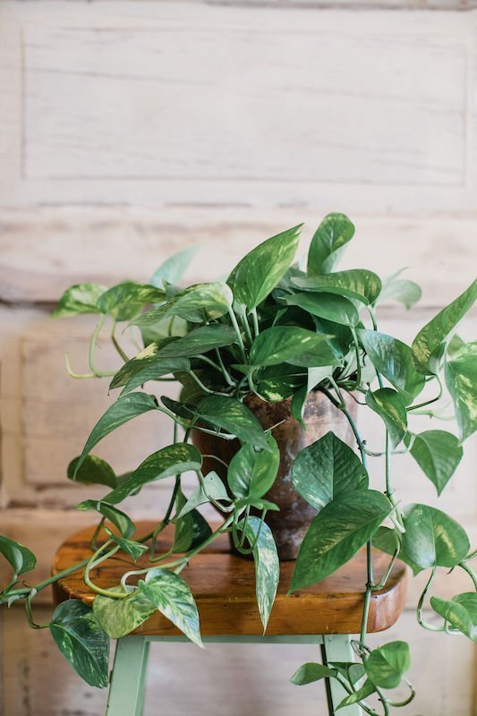
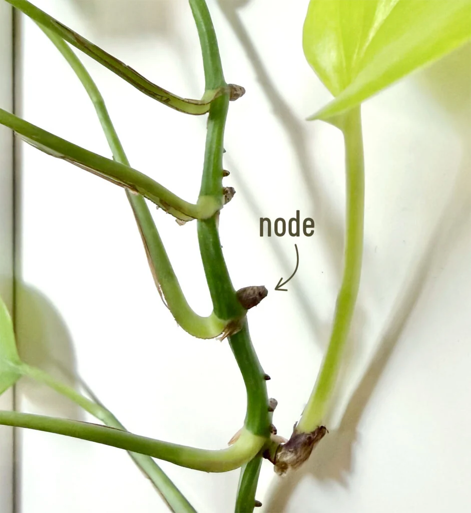
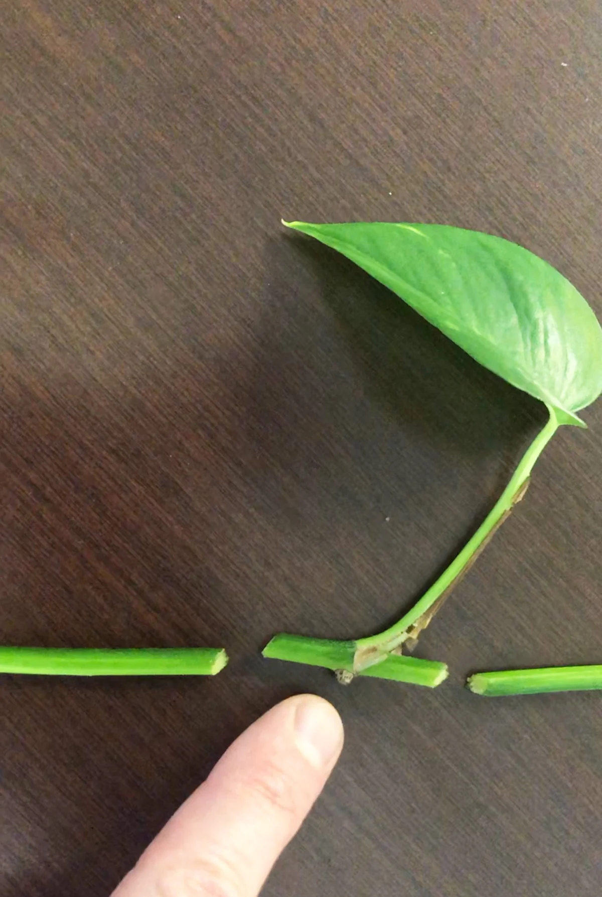
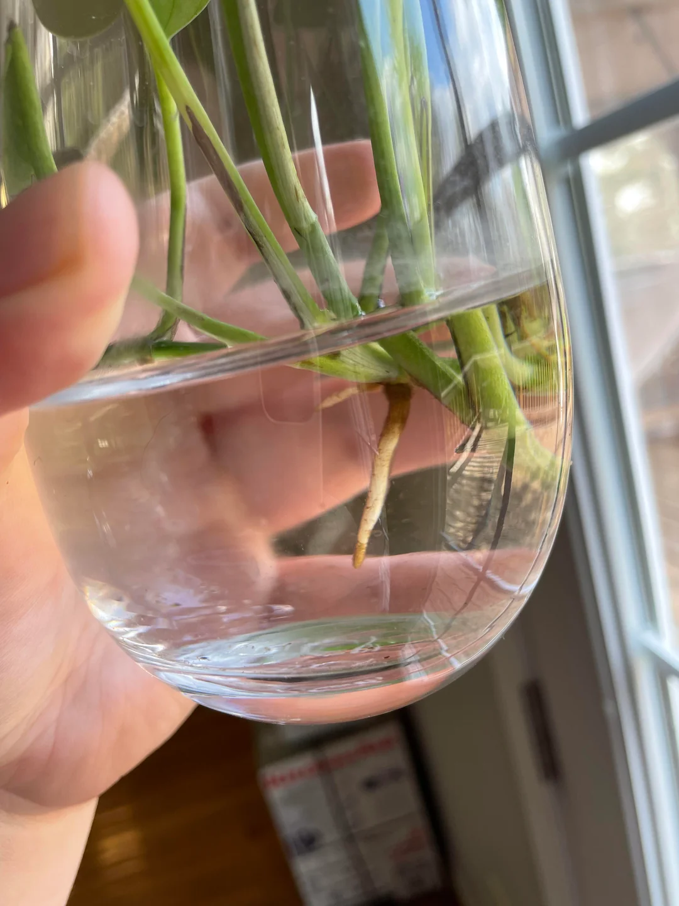
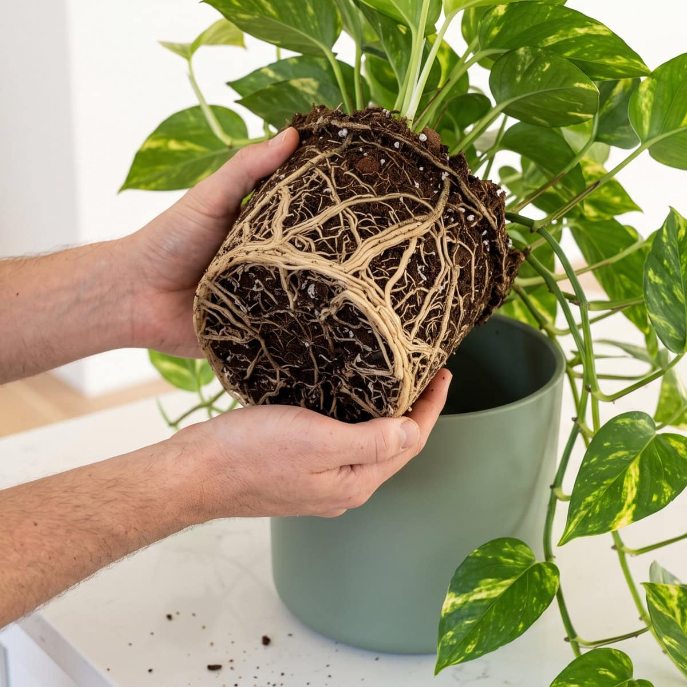
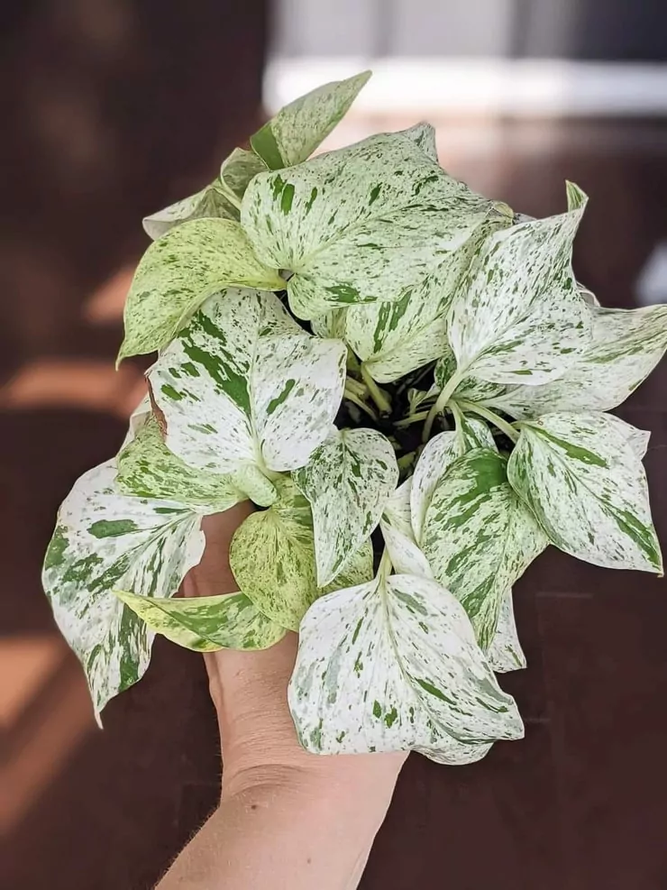

Epipremnum aureum · Indoor plant care
Pothos
Care Guide
Grow healthy indoor pothos with clear steps for propagation, watering, light, and repotting.
Let’s get growing ⟶
01 / Propagate a new plant
How to propagate pothos
Root a stem cutting in water, then transfer it to soil.
A stem node is essential.
A leaf alone will not grow.
You need: a healthy vine · clean scissors · a jar · fresh water · a small pot with drainage
About 10 minutes to prepare
-

01 Find a stem node
Locate the small bump where a leaf joins the stem. Choose a healthy section with at least one node and 1–3 leaves.
-

02 Cut below the node
Use clean scissors to cut just below a node. Remove any lower leaf that would be submerged in the jar.
-

03 Root it in water
Cover the node with water; keep leaves above it. Place in bright, indirect light. Change the water weekly or sooner if cloudy.
-

04 Transfer to soil
When roots reach 2–3 inches (5–8 cm), plant in airy mix in a draining pot. Keep lightly moist for the first 1–2 weeks, not soggy.
Roots often appear in 2–4 weeks, sometimes longer. Keep the node submerged and top up the water between changes.
02 / Meet your houseplant
Get to know pothos.
Epipremnum aureum: a trailing indoor vine.
Golden pothos has green leaves marbled with yellow. Marble Queen has cream-and-green variegation; Neon has bright lime-green foliage. These houseplant forms keep small, unbroken, heart-shaped leaves.
Grow pothos in a draining pot on a shelf, in a hanging basket, or trained up a support. Give variegated forms bright, indirect light to help retain their pattern. Lower light means slower growth.
Choose a pot with drainage holes; keep trailing vines away from pets and children.
03 / Light & everyday care
Light, warmth & growth.
Choose a bright indoor spot out of harsh midday sun.
Bright, indirect light
Try an east-facing window or filter strong light with a sheer curtain. Lower light slows growth; pale, variegated forms need more light to keep their pattern.
Keep the room at 18–29°C
Aim for 65–85°F (18–29°C). Keep leaves away from cold window glass, air-conditioning vents, and hot radiators.
Prune and support vines
Trim a long vine just above a node to encourage branching. Rotate the pot regularly and wipe dusty leaves with a damp cloth.

04 / When & how to water
Water the soil.
Not the calendar.
The best reminder is a finger in the pot.
Check the top 1–2 inches of soil. If they feel dry, water thoroughly until excess runs out of the drainage holes. Empty the saucer or outer pot afterwards.
Still damp? Leave it be and check again in a few days. Light, warmth, pot size, and the season all change how quickly a plant gets thirsty.
Dry 1–2 inches down? Water and drain.

05 / Soil & repotting
Happy roots,
happy vines.
A pot that drains makes all the difference.
Use a loose, well-draining indoor potting mix; extra perlite or fine orchid bark can help it stay airy. Always choose a pot with drainage holes.
When roots circle tightly or crowd the holes, move up just one pot size in spring or summer. Feed with a balanced houseplant fertilizer at the label’s recommended dilution during active growth.
In winter, check the soil before watering and pause feeding if growth stops.
06 / Troubleshooting & safety
Common pothos problems
Check the soil, drainage, and light first.
Start with the soil and light before changing everything at once. Small, thoughtful adjustments are enough.
Change one care habit at a time.
Why are the leaves turning yellow?
Check the soil first. Persistently soggy mix can stress roots; let the top 1–2 inches dry and make sure the pot drains. One old yellow leaf can also be normal.
My vine is getting long and bare.
Move it gradually into brighter, indirect light. Trim just above a node to encourage branching, then root the cuttings to fill out the pot.
The leaves are drooping. Is it thirsty?
Feel before you pour. Dry soil can mean thirst; wet soil can mean stressed roots. If it stays wet and smells sour, inspect the roots and remove rotten parts.